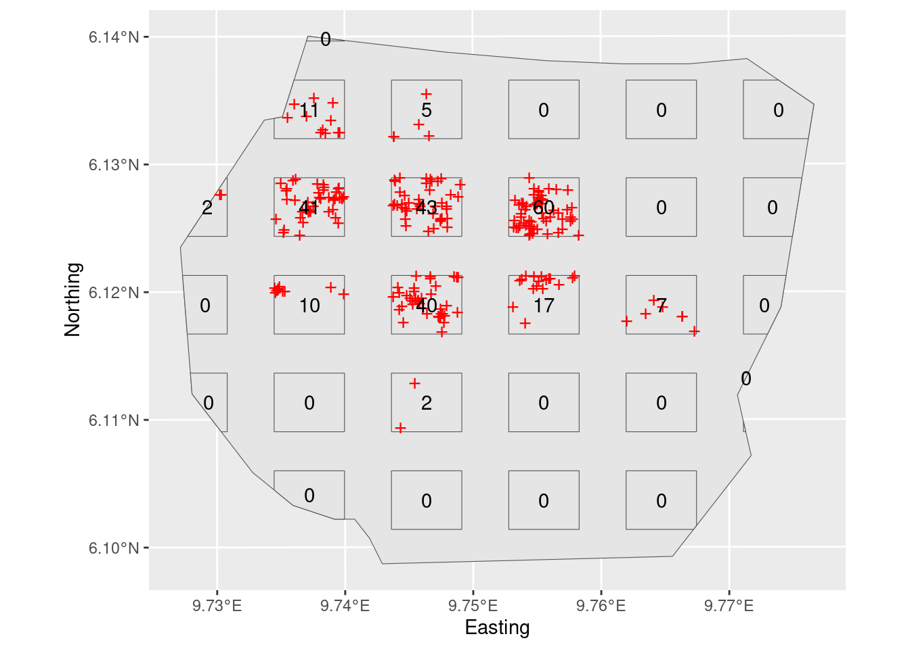
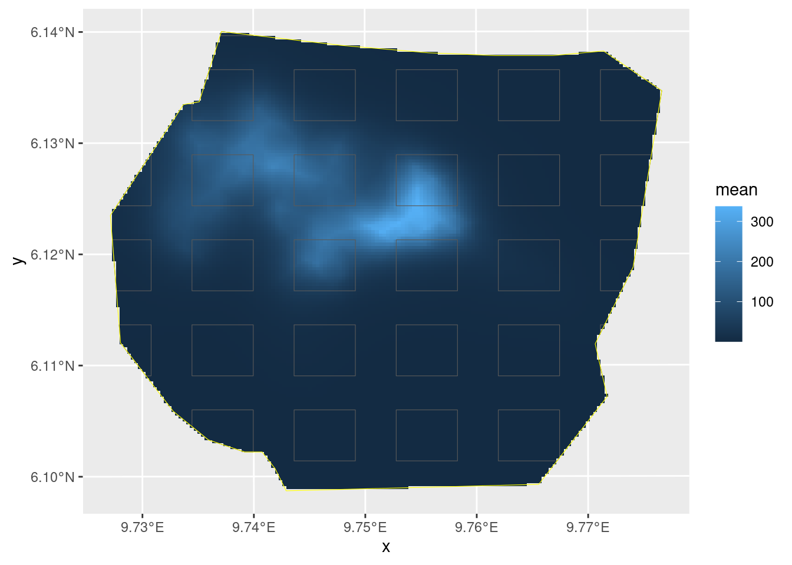
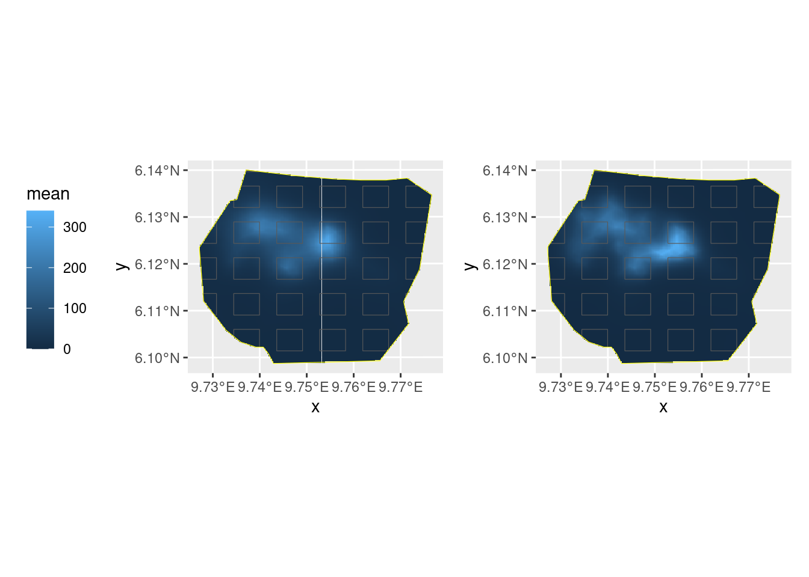

LGCPs - Plot sampling
David Borchers and Finn Lindgren
Generated on 2024-09-19
Source:vignettes/articles/2d_lgcp_plotsampling.Rmd
2d_lgcp_plotsampling.RmdIntroduction
This practical demonstrates use of the samplers argument
in lgcp, which you need to use when you have observed
points from only a sample of plots in the survey region.
Get the data
data(gorillas_sf, package = "inlabru")This dataset is a list (see help(gorillas) for details.
Extract the the objects you need from the list, for convenience:
nests <- gorillas_sf$nests
mesh <- gorillas_sf$mesh
boundary <- gorillas_sf$boundary
gcov <- gorillas_sf_gcov()The gorillas data also contains a plot sample subset
which covers 60% of the survey region.
sample <- gorillas_sf$plotsample
plotdets <- ggplot() +
gg(boundary) +
gg(sample$plots) +
gg(sample$nests, pch = "+", cex = 4, color = "red") +
geom_text(aes(
label = sample$counts$count,
x = sf::st_coordinates(sample$counts)[, 1],
y = sf::st_coordinates(sample$counts)[, 2]
)) +
labs(x = "Easting", y = "Northing")
plot(plotdets)
On this plot survey, only points within the rectangles are detected, but it is also informative to plot all the points here (which if it was a real plot survey you could not do, because you would not have seen them all).
plotwithall <- ggplot() +
gg(boundary) +
gg(sample$plots) +
gg(nests, pch = "+", cex = 4, color = "blue") +
geom_text(aes(
label = sample$counts$count,
x = sf::st_coordinates(sample$counts)[, 1],
y = sf::st_coordinates(sample$counts)[, 2]
)) +
gg(sample$nests, pch = "+", cex = 4, color = "red") +
labs(x = "Easting", y = "Northing")
plot(plotwithall)Inference
The observed nest locations are in the SpatialPointsDataFrame
sample$nests, and the plots are in the
SpatialPolygonsDataFrame sample$plots. Again, we are using
the following SPDE setup:
matern <- inla.spde2.pcmatern(mesh,
prior.sigma = c(0.1, 0.01),
prior.range = c(0.05, 0.01)
)Fit an LGCP model with SPDE only to these data by using the
samplers= argument of the function
lgcp( ):
cmp <- geometry ~ my.spde(geometry, model = matern)
fit <- lgcp(cmp, sample$nests, samplers = sample$plots, domain = list(geometry = mesh))Plot the density surface from your fitted model
pxl <- fm_pixels(mesh, mask = boundary)
lambda.sample <- predict(fit, pxl, ~ exp(my.spde + Intercept))
lambda.sample.plot <- ggplot() +
gg(lambda.sample, geom = "tile") +
gg(sample$plots, alpha = 0) +
gg(boundary, col = "yellow", alpha = 0)
lambda.sample.plotEstimate the integrated intensity lambda. We compute both the overall integrated intensity, representative of an imagined new realisation of the point process, and the conditional expectation that takes the actually observed nests into account, by recognising that we have complete information in the surveyed plots.
Lambda <- predict(fit, fm_int(mesh, boundary), ~ sum(weight * exp(my.spde + Intercept)))
Lambda.empirical <- predict(
fit,
rbind(
cbind(fm_int(mesh, boundary), data.frame(all = TRUE)),
cbind(fm_int(mesh, sample$plots), data.frame(all = FALSE))
),
~ (sum(weight * exp(my.spde + Intercept) * all) -
sum(weight * exp(my.spde + Intercept) * !all) +
nrow(sample$nests))
)
rbind(
Lambda,
Lambda.empirical
)Fit the same model to the full dataset (the points in
gorillas_sf$nests), or get your previous fit, if you kept
it. Plot the intensity surface and estimate the integrated intensity
fit.all <- lgcp(cmp, nests,
samplers = boundary,
domain = list(geometry = mesh)
)
lambda.all <- predict(fit.all, pxl, ~ exp(my.spde + Intercept))
Lambda.all <- predict(fit.all, fm_int(mesh, boundary), ~ sum(weight * exp(my.spde + Intercept)))Your plot should look like this:

The values Lambda.empirical, Lambda, and
Lambda.all should be close to each other if the plot
samples gave sufficient information for the overall prediction:
rbind(
Plots = Lambda,
PlotsEmp = Lambda.empirical,
All = Lambda.all,
AllEmp = c(nrow(gorillas$nests), 0, rep(nrow(gorillas$nests), 3), rep(NA, 3))
)
#> mean sd q0.025 q0.5 q0.975 median sd.mc_std_err
#> Plots 650.7364 48.89449 563.1274 649.7081 749.6041 649.7081 3.414623
#> PlotsEmp 639.4534 37.90528 574.0314 640.3581 721.2718 640.3581 2.974409
#> All 679.4683 29.98281 625.2732 677.9620 740.2100 677.9620 2.203889
#> AllEmp 647.0000 0.00000 647.0000 647.0000 647.0000 NA NA
#> mean.mc_std_err
#> Plots 5.572374
#> PlotsEmp 4.385410
#> All 3.439059
#> AllEmp NANow, let’s compare the results
library(patchwork)
lambda.sample.plot + lambda.all.plot +
plot_layout(guides = "collect") &
theme(legend.position = "left") &
scale_fill_continuous(limits = range(c(0, 340)))
Do you understand the reason for the differences in the posteriors of the abundance estimates?